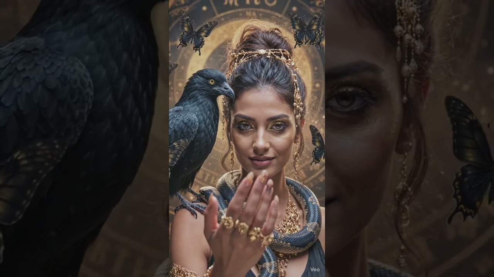

Blue $nake Studio · Devotional code-poem
Two ciphers.
One name.
A devotional chant, an interactive code-poem, and a black-wing visual hymn.
Watch the two-minute reveal, then explore the acrostic and the syllable grid that both hide the same name — Kṛṣṇa — twice over. Everything below is free to read, chant, print and share.
Kṛṣṇapakṣi Chant — Two ciphers, one name. A Blue Snake Studio devotional code-poem: the Hare Krishna Mahā-mantra hidden once as an acrostic and again inside a 23×8 syllable grid. Watch, chant, read the PDF, explore the grid — free, ad-free, at blkck2.com.
Quick start
A five-step guided tour.
New here? Follow these in order. Each one takes under a minute.
The video
Watch the reveal.
Click to load the video from YouTube. It will not play automatically, and never with sound until you start it.

Meaning
What Kṛṣṇapakṣi means here.
Kṛṣṇa (dark, black) and pakṣī (bird, wing) read together as "the black-winged one" — a name that sits naturally alongside B$S's own black cockatoo and Black Wing Crew imagery. The word also echoes kṛṣṇa-pakṣa, the dark or waning fortnight of the Vedic lunar calendar. Both resonances are intentional wordplay, not a claim that "Kṛṣṇapakṣi" is a historical scriptural name.
The piece itself is a playful bhakti-flavoured myth — a "Moss Man lila" — in which Krishna appears as trickster, flautist and hidden friend inside jokes, numbers, vaults and a very unserious dance. The Mahā-mantra sits at its centre, chanted, hidden, and chanted again.
Kṛṣṇapakṣi — Blue Snake Studio wordplay on kṛṣṇa (dark/black) and pakṣī (bird/wing): "the black-winged one." The Mahā-mantra at its centre — Hare Kṛṣṇa Hare Kṛṣṇa, Kṛṣṇa Kṛṣṇa Hare Hare, Hare Rāma Hare Rāma, Rāma Rāma Hare Hare — is hidden once as an acrostic (the Gaura-Stava plate) and again inside a 23×8 syllable grid. A creative devotional code-poem, not a claim of Sanskrit scholarship or religious authority.
Cipher I
The Gaura-Stava acrostic.
The reader edition's second plate — the Kṛṣṇa–Pakṣi Gaura–Stava — is a devotional hymn (stava) in praise of Gaura, the "golden" form of Krishna's own name-chant. Its lines are arranged so the hidden name can be read down the acrostic as well as across the verse — one name, written twice into the same shape.
Open the full plate inside the PDF reader edition below to see the acrostic in its original layout.
See the Gaura-Stava plate ↓Cipher II
The 23 × 8 syllable grid.
The Hare Krishna Mahā-mantra is 32 syllables — the same 32 syllables named in the Kali-Santaraṇa Upaniṣad:
In the visual edition, those syllables are tiled edge to edge into a 23 × 8 grid — 184 cells, cycling the same 32 sounds until the whole field repeats. Reveal the name below to see where Kṛṣṇa resurfaces inside it.
← Scroll to see the full grid on small screens →
Performance
Chant mode.
Read each line aloud, at your own pace. Press play to step through them one at a time, or just read down the page.
One final spiral through the centre. No veil. Just the chant, the field, and the pulse.
Hare Kṛṣṇa Hare Kṛṣṇa
Kṛṣṇa Kṛṣṇa Hare Hare
Hare Rāma Hare Rāma
Rāma Rāma Hare Hare
Say it once and feel the moss bloom underfoot.
Say it twice and the numbers begin to dance.
Say it thrice and the vault opens in the heart.
The chant does not end. It echoes in different forms.
Glossary
Words used on this page.
- Kṛṣṇapakṣi
- B$S wordplay on kṛṣṇa (dark/black) + pakṣī (bird/wing) — "the black-winged one."
- Mahā-mantra
- The "great chant" — Hare Kṛṣṇa Hare Kṛṣṇa, Kṛṣṇa Kṛṣṇa Hare Hare, Hare Rāma Hare Rāma, Rāma Rāma Hare Hare.
- Japa
- Quiet, repeated chanting of a name or mantra, often counted on beads.
- Bhakti
- Devotion — love and surrender expressed through story, chant and relationship.
- Līlā
- Play — the divine described as playful, spontaneous activity rather than solemn instruction.
- Stava
- A devotional hymn of praise.
- Gaura
- "Golden one" — a name for Caitanya Mahāprabhu, associated with congregational name-chanting.
- Acrostic
- A piece of writing where a hidden word can be read down its opening letters or lines.
PDF edition
The Pulse of Krishna — Reader Edition.
The full illustrated reader edition, including the Gaura-Stava plate referenced in Cipher I. Free to read, download and print.
For you
However you found this, there's a way in.
Devotional readers
Read the plain meaning, chant along, print the PDF for your own altar or study space.
Start chanting →Musicians
Remix it, perform it, respond to it. The sound world lives with Black Wing Crew.
Hear the music →Educators
Use the acrostic and the syllable grid as a pattern, poetry and symbolic-code example.
Schools / Council →Collaborators
Working on chant, code, or devotional art? Get in touch — B$S replies personally.
Email B$S →Part of the studio